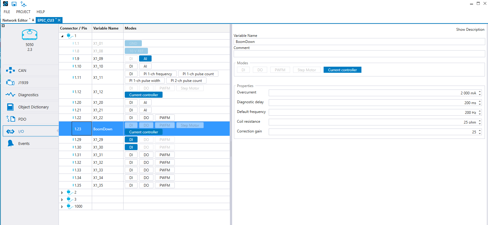
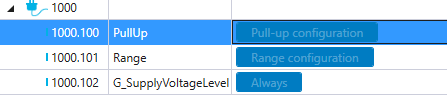
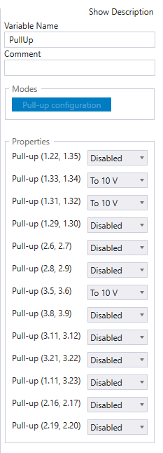
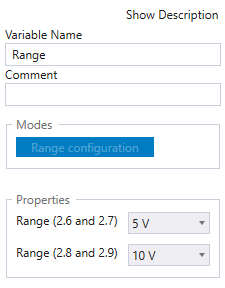
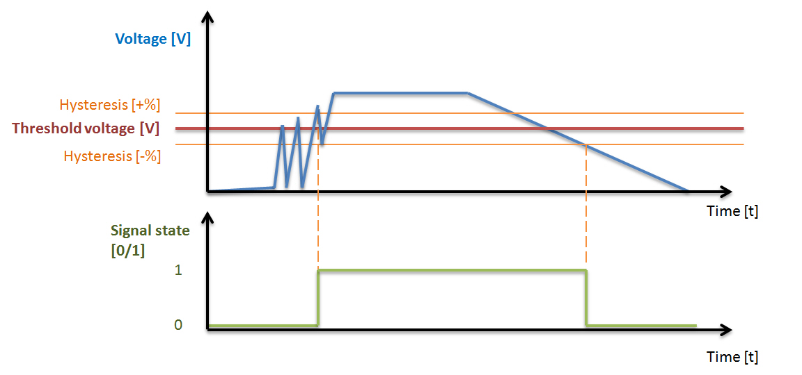
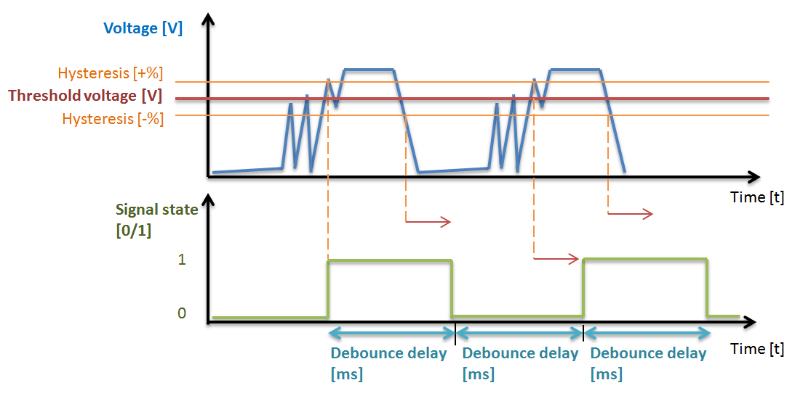
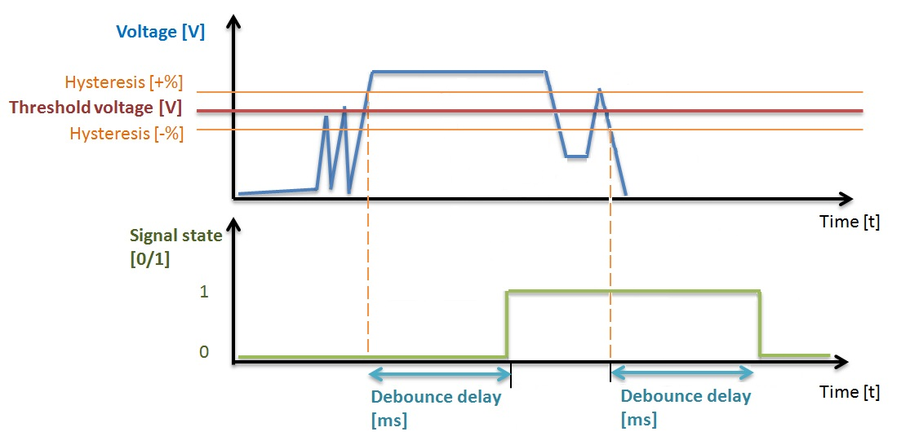

The input and output behavior configurations are done on the I/O tab. On the left side, the I/O pins are listed according to the Connector and Pin. When a pin is selected, the possible configurations are shown on the right.
The pin mode can be selected either directly on the I/O pin list's Modes column or from the configurations on the right. The Modes list show the possible modes for the pin and the selection works as a toggle button.
The pin Variable Name can be given either directly on the I/O pin list's Variable Name column or from the configurations on the right.
The Comment for the pin will be shown in CODESYS as a comment text on the global variable list IO.
To export I/O into a PDF or Excel file, press SHIFT + ALT + S.
For more information about the pins' electrical characteristics, refer to the device's technical manual.

Connector 1000 shows configurations that are common for several pins.

For example, Pull-up and Range can be configured for the following pins, shown in the pictures below.
 |
 |
The following table describes the possible I/O pin configurations:
Property |
Description |
Pull-up |
Pull-up enable selection for the pin (Disabled/To +10V) |
Debounce delay |
Defines the time how often the digital input status can change (TRUE/FALSE). See also the figures below this table. |
Debounce filtering |
Defines the debounce filtering type of digital input. Debounce fast (Filters_DebounceDI_Fast FB): DI status do not change more frequently than given debounce delay. Debounce (Filters_DebounceDI FB): DI status do not change before DI value has been stable for a debounce delay time. See also the figures below this table. |
Threshold |
When the voltage level exceeds the threshold limit, the digital input state is set to true. See also the figures below this table. |
Hysteresis |
Allowed hysteresis of threshold in percent. The digital input state is false, when the voltage falls below the limit calculated by subtracting hysteresis from the threshold. See also the figures below this table. |
AI to DI conversion method |
Select the threshold definition: fixed threshold in runtime or adjustable threshold and hysteresis |
Overcurrent |
Overcurrent limit for pins that have current measurement feature. When the current measurement value is over the defined time (200ms) greater than the parameter value, the global boolean variable (PWFM_OVERCURRENT_...) is set on and the output or the channel is set to 0. The channel is disabled until the output is set off. |
Default frequency |
Frequency selection for the used channel in Hz. |
AI mode |
Signal area selection mA/V |
Filter samples |
The amount of samples that is used to calculate AI mean value |
Filter method |
Selects the filtering method (runtime / PLCopen library) |
Coil resistance |
The resistance of the used load |
Correction gain |
Correction gain is used to fix the difference between approximated ratio and actual ratio which must be used to achieve defined current demand. |
Diagnostic delay |
Defines the delay for overcurrent |
Edge select |
The selection determines whether both or one edge is counted |
Channel pair (B) |
The pin that is configured for channel two |
Reset channel (R) |
The pin that is configured to reset the pulse input count |
Frequency ratio |
Frequency ratio selection |
Range configuration |
Used voltage range |
Minimum voltage |
Diagnostic minimum voltage of the analog input pin. If the voltage goes under the minimum limit, the measurement is set to 0. |
Maximum voltage |
Diagnostic maximum voltage of the analog input pin. If the voltage goes over the maximum limit, the measurement is set to 0. |
Minimum current |
Diagnostic minimum current of the analog input pin. If the current goes under the minimum limit, the measurement is set to 0. |
Maximum current |
Diagnostic maximum current of the analog input pin. If the current goes over the maximum limit, the measurement is set to 0. |
Safety related |
When selected, the pin is regarded as a safety related pin in the project. This is also indicated by a yellow background in the list of I/O pins. |
The following figure describes how threshold and hysteresis affect the signal state:

The following figure describes the debounce delay of debounce fast filtering type:

The following figure describes the debounce delay of debounce filtering type:

Epec Oy reserves all rights for improvements without prior notice.
Source file topic200007.htm
Last updated 25-Jun-2025